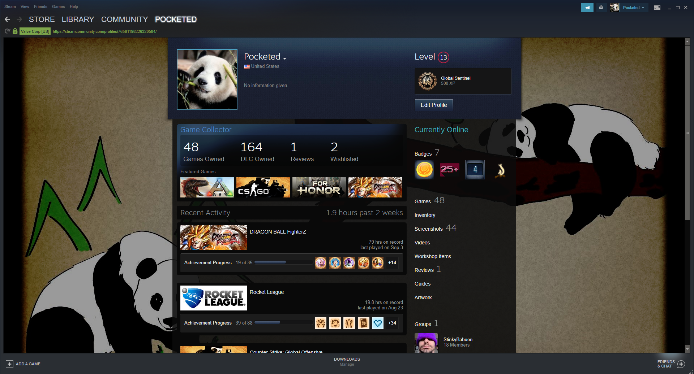
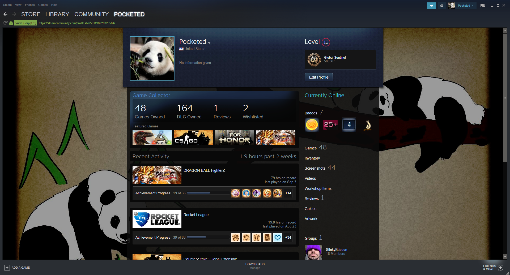

Personally I hope to be playing games till the end of my days. Sadly I'm sure at some point I wont be able to play as much, but I love it because it's also a good way to keep in touch with friends. Gaming is an escape from real world work and gives me time to enjoy something I love.
Games have been around since engineers started developing computers way back in the late 1950's, but they didn't become popular until the arcade era in the early 1970's. Since then, they have brought joy to millions of people around the world.
 
